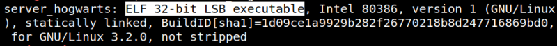
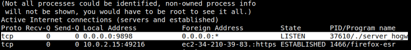
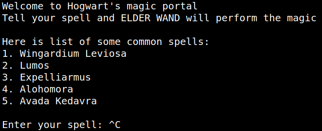

3.3 File
File type.
1. On your Kali Machine run this command.
$file server_hogwarts
Output:

It is a 32 bit ELF application.
2. Make it executable and see what it does.
$chmod +x server_hogwarts
$./server_hogwarts
$./server_hogwarts
It looks as if the program is listening on a port.
Note: Don't close the program.
Netstat
1. Now, let's view the programs and their port.
$netstat -atup
Output:

We can see that the program is listening on 9898 port.
So, we might guess that this is the same program that we saw earlier in the server. Now, let's confirm that.
$nc 127.0.0.1 9898
Output:

It's the same program.